Seeeduino Stalker V3 enclosure is used for Arch GPRS V3, It's waterproof and enough strength, Can carry Arch GPRS V3 environmental testing and data collection very well.
Model:[110070015]
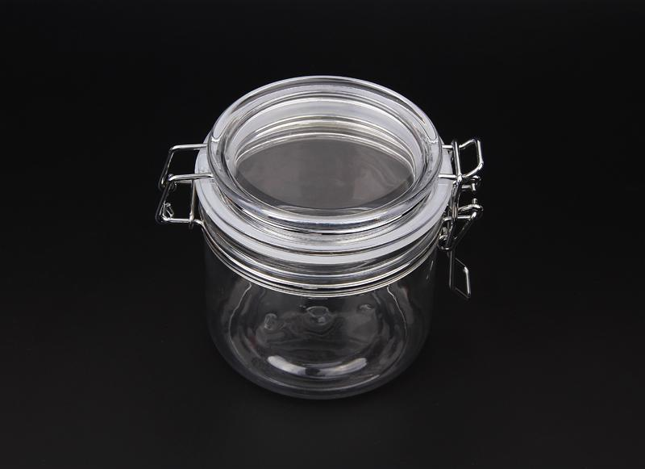
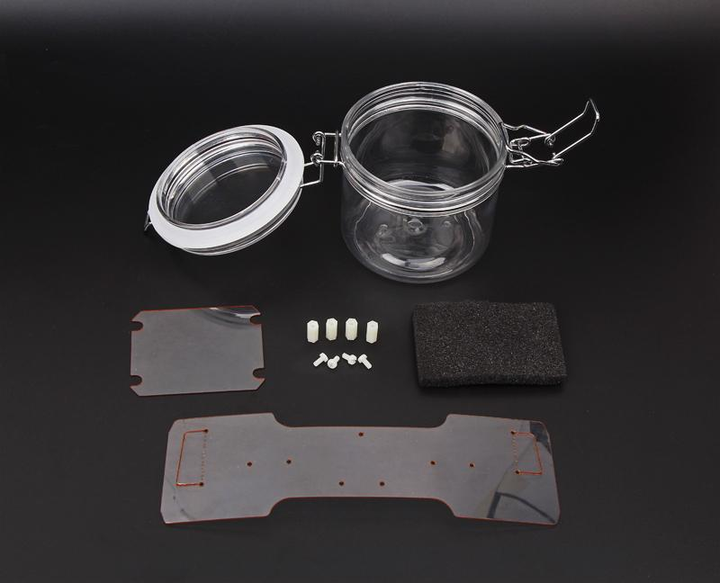
It's very easy to use, You only use the PVC mounting plate can fixed it.
The first——Mounting the screw column and nylon screw.
We should mounting the screw column and nylon screw.
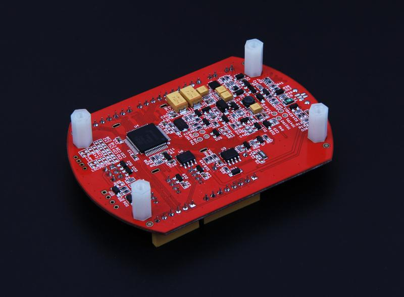
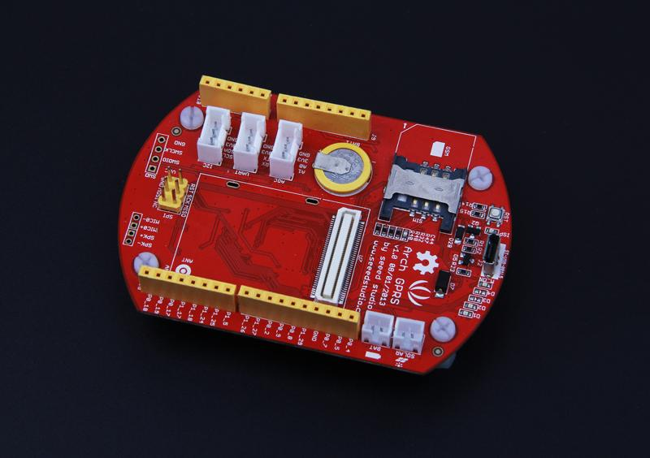
The second——Place the sponge cushion.
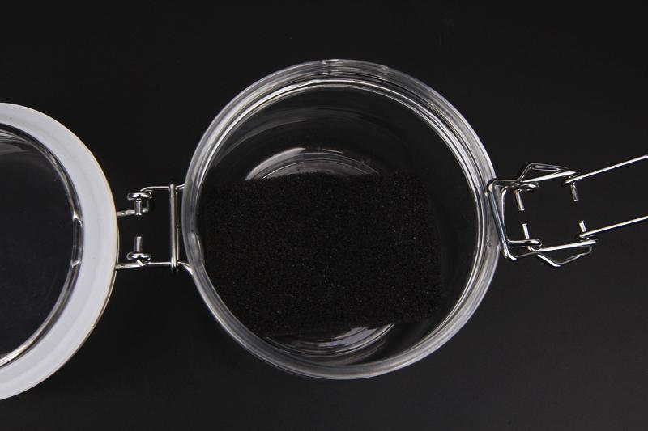
The third——Place the battery.
It's worth noting that we should place the battery separator piece in order to prevent battery contacting components.
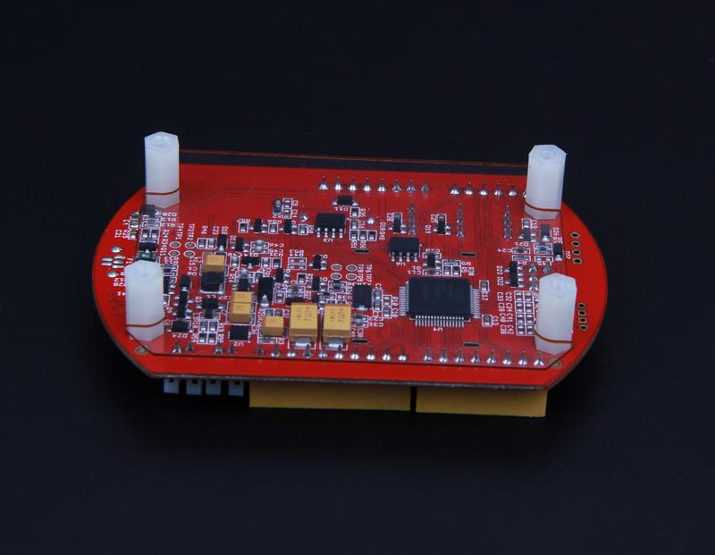
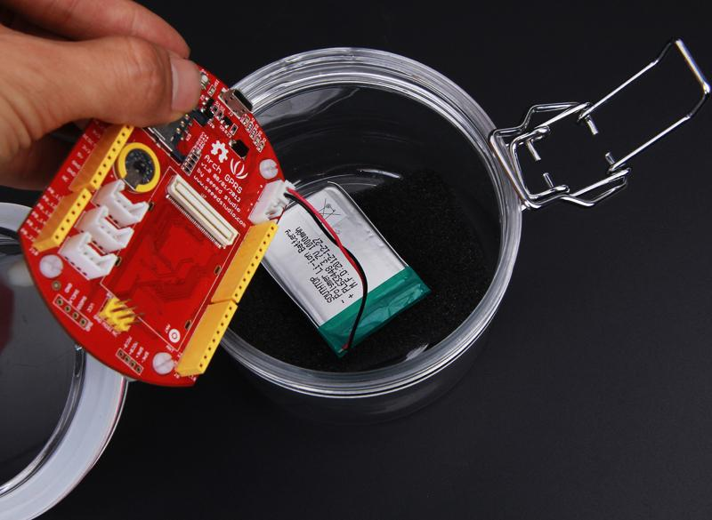
The fourth——Fix the PCBA and solar battery
Bending the pvc plate and fix the PCBA with a snap.
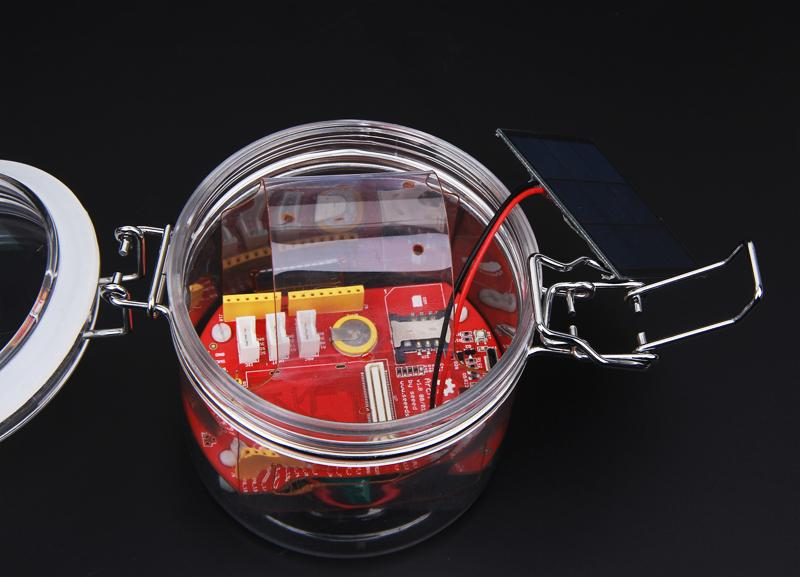
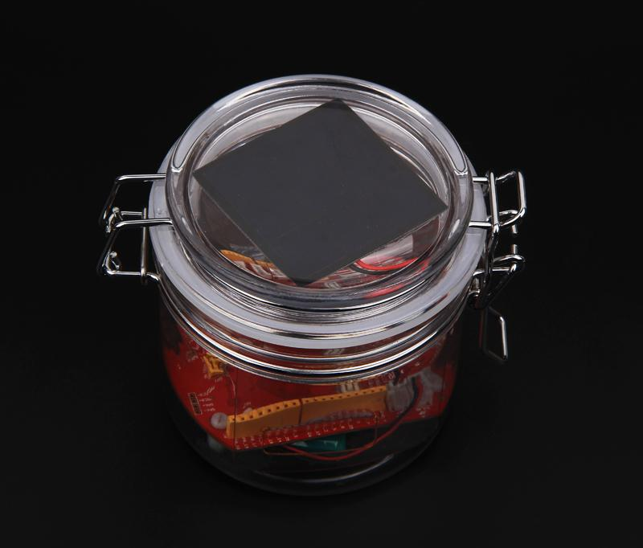
As we mentioned before, The enclosure is used to carry Arch GPRS V3 environmental testing and data collection.
Grove series sensors can easily mounting to the PVC plate by rivet.
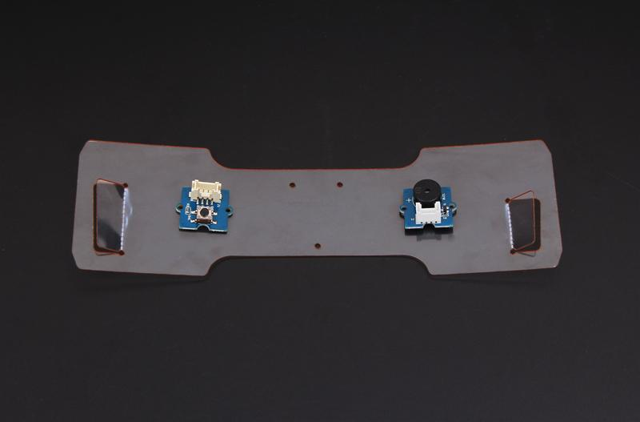
The stalker enclosure carry the Arch GPRS in the wild .
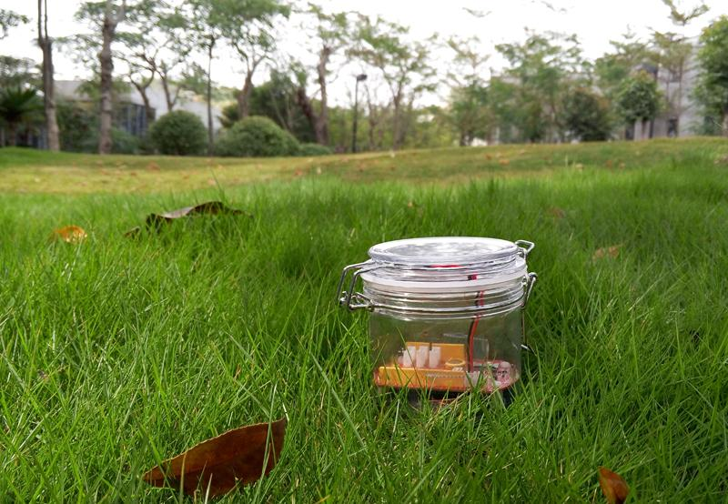
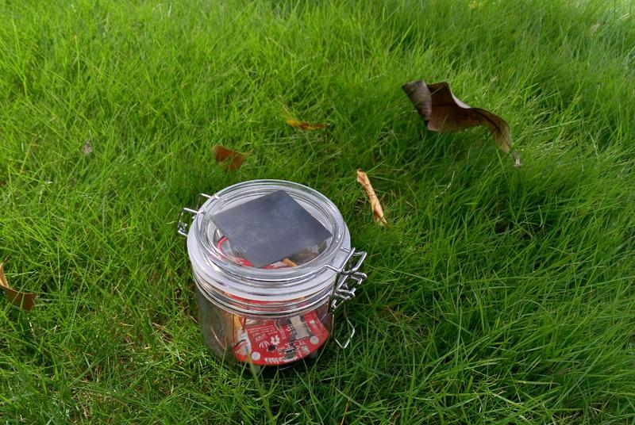
It's hanging on the tree .
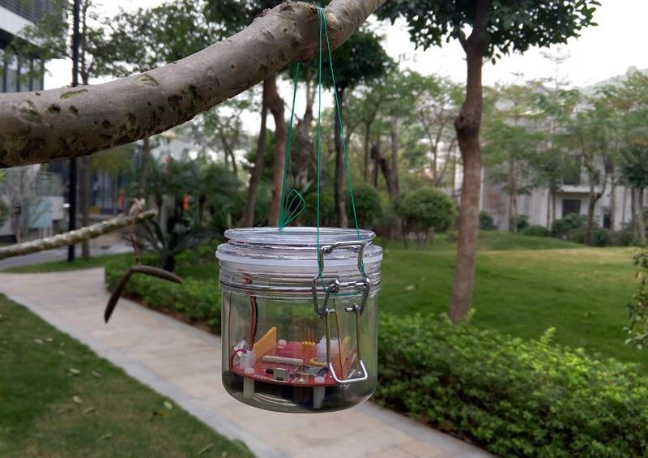
If you mounting the iron block，You can throw it in the water，Solar battery always up .
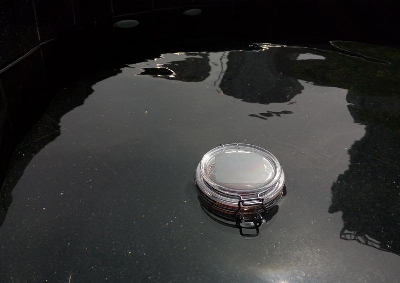
==Part list==
| Part | Package | Qty |
|---|---|---|
| Stalker enclosure | 90 diameter 9.25 Height | 1 |
| PVC Mounting piece | Size 200*63mm | 1 |
| Battery separator piece | Size 71.8*60mm | 1 |
| Nylon Screw | M3*6 | 4 |
| Screw Column | M3*4 | 4 |
| Buffer Sponge | Size 70*55*8mm | 1 |